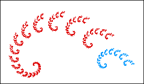
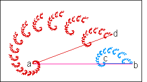
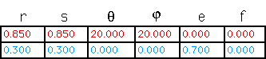

| From our experience with the fern, we expect to decompose the spiral into a small number of pieces. |
| Indeed, two suffice: |
|  |
| To determine scalings and angles, we use the method described in Measuring IFS Pieces. |
|  |
| Taking the segment ab as the horizontal base, the r scaling factor
of the blue piece is |
| The r scaling factor of the red piece
is |
| Analogous measurements give |
| Taking the point a to be the origin, the red piece is rotated by the angle between ab and ad. |
| Finally, the horizontal translation of the blue piece is the length of ac. |
| Thus this spiral fractal is generated by these IFS rules. |
|  |
| This spiral is a fractal, unlike the simple logarithmic spiral |
|
| which is not. |
| Here are some more examples. |
Return to Natural Fractal Inverse Problems.